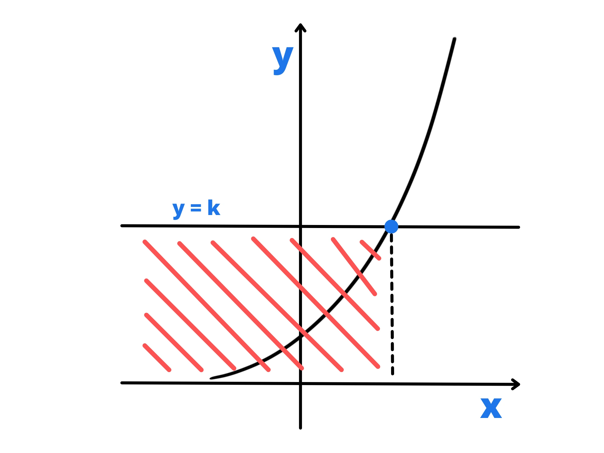
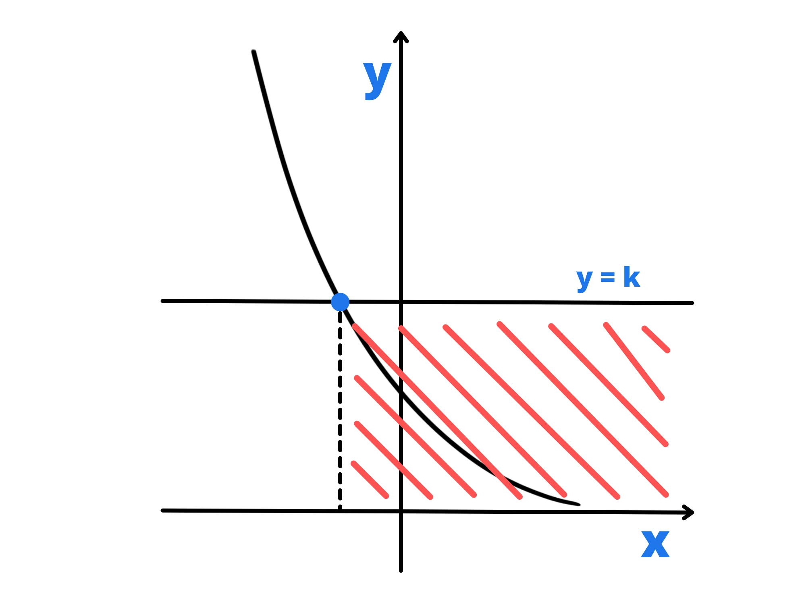

Una disequazione esponenziale è una disequazioni in cui appare almeno una potenza con l'incognita nell'esponente. Esse sono quindi disequazioni del tipo:
\(a^f(x) > g(x) \)
o con \(<\) ,\(\geq\) o \(\leq\) al posto di \(>\).
Iniziamo vedendo al caso particolare in cui \(f(x) = x\) e \(g(x)\) è costante. Avremo quindi disequazioni del tipo:
\(a^x > b \)
Dobbiamo dividere queste disequazioni in due casi:
In questo caso per prima cosa risolviamo l'equazione associata:
\(a^x =b\)
Una volta questo, sapendo che la funzione \(a^x\) è monotona crescente (ovvero aumenta sempre), troviamo la soluzione della disequazione.
Vediamo qualche esempio.
Risolviamo la disequazione esponenziale:
\(3^x > 81 \)
Risolviamo l'equazione associata:
\(3^x = 81 \)
\(3^x = 3^4\)
\(x= 4 \)
Sappiamo che \(3^x\) aumenta sempre, quindi per \(x > 4\) sarà sempre maggiore di 81. Quindi la soluzione è \(x>4\).
Risolviamo la disequazione esponenziale:
\(5^x \leq 125 \)
Risolviamo l'equazione associata:
\(5^x = 125\)
\(5^x = 5^3 \)
\(x= 3\)
Sappiamo che \(5^x\) aumenta sempre, quindi per \(x>3\) sarà sempre maggiore di 125, mentre per \(x < 3\) sarà sempre minore di 125. La soluzione è quindi \(x \leq 3\).
In tal caso il procedimento è lo stesso, ma questa volta dobbiamo considerare che la funzione è monotona decrescente (ovvero diminuisce sempre).
Vediamo qualche esempio:
Risolviamo la disequazione esponenziale:
\(({1 \over 2})^x < {1\over 32} \)
Risolviamo l'equazione associata:
\(({1\over 2})^x ={1\over 32} \)
\(({1\over 2})^x =({1\over 2})^5 \)
\(x=5 \)
Siccome \(({1\over 2})^x\) diminuisce sempre, per \(x>5\) sarà sempre minore di \({1\over 32}\), quindi la soluzione è proprio \(x>5\).
Risolviamo la disequazione esponenziale:
\(({1\over 3})^x \geq {1\over 9} \)
Risolviamo l'equazione associata:
\(({1\over 3})^x ={1\over 9}\)
\(({1\over 3})^x =({1\over 3})^2 \)
\(x=2 \)
Siccome \(({1\over 3})^x\) diminuisce sempre, per \(x>2\) sarà sempre minore di \({1\over 9}\) e sarà invece maggiore di \({1\over 9}\) per \(x < 2\), quindi la soluzione è proprio \(x\leq 2\).
Usando i logaritmi possiamo risolvere disequazioni più complicate, dove possono apparire più potenze con incognite all'esponente. Ci basterà applicare il logaritmo base 10 da entrambi i lati e semplificare. Possiamo pure applicare logaritmi con altre basi, ma se è compresa tra 0 ed 1 dobbiamo cambiare il segno della disequazione, perché:
Dato \(x>y\), se \(a>1\), avremo:
\(\log_{a} (x) >\log_{a} (y)\)
Mentre se \(0 < a < 1\) , avremo:
\(\log_{a} (x) < \log_{a} (y) \)
In generale conviene quindi applicare sempre il logaritmo base 10 e non avere paura di dover cambiare qualcosa.
Vediamo qualche esempio:
Risolviamo la disequazione esponenziale:
\(5\cdot 3^x > 2^{x-3} \)
Abbiamo quantità positive da entrambi i lati, quindi applichiamo il logaritmo base 10 da entrambi i lati:
\(\log_{10}(5 \cdot 3^x) > \log_{10}(2^{x-3}) \)
Applichiamo la proprietà del logaritmo di un prodotto e sottintendiamo \(\log_{10}\) con \(\log\):
\(\log (5) + \log (3^x) > \log (2^{x-3}) \)
Applichiamo la proprietà del logaritmo di una potenza ed isoliamo x:
\(\log(5) + x \log(3) > (x-3) \log(2) \)
\(\log (5) + x\log (3) >x\log(2) -3\log(2) \)
\(x\log(3) - x\log(2) > -\log(5) -3\log(2)\)
\(x( \log(3) -\log(2))>-(\log(5)+3\log(2)) \)
Siccome \(\log(3) -\log(2)\) è una quantità positiva, possiamo dividere entrambi i lati per essa:
\(x> -\frac{\log(5+3\log(2))}{\log(3)-\log(2)} \)